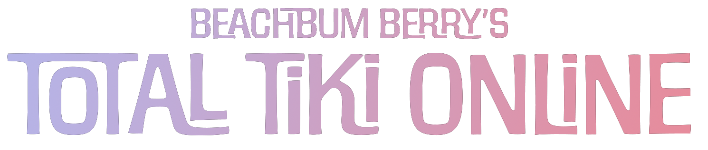
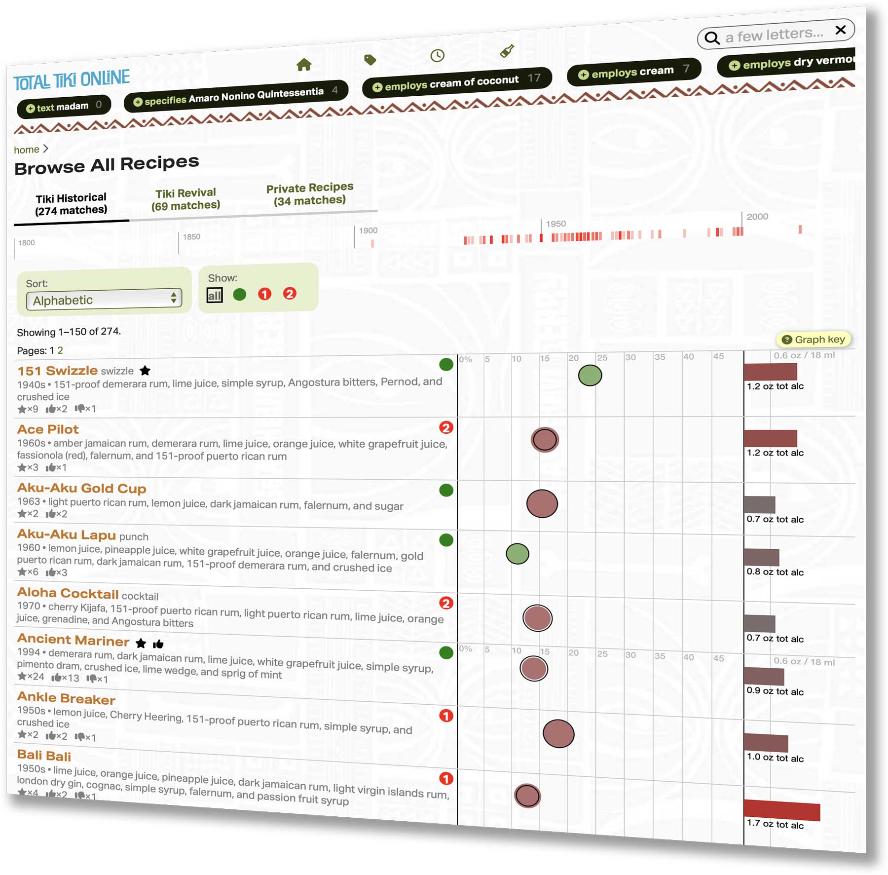

The definitive reference for exotic mixed drinks on the web. And a whole lot more.

These are the recipes you’re looking for
Since 2014, Total Tiki has been historian Jeff “Beachbum” Berry’s master database of exotic drinks, with over 320 recipes (and growing). Within the new Total Tiki Online service, you’ll have at your fingertips authoritative recipes for for the Zombie, Mai Tai, Painkiller, and Scorpion, but also scores of less-known, brilliant concoctions of the 1940s, -50s, -60s and -70s, plus dozens of delicious, contemporary formulations that point the way to the future. Total Tiki Online is also the perfect complement to Berry’s essential books, Sippin’ Safari and Potions of the Caribbean.
Next generation content
Total Tiki Online does everything our hit Total Tiki iPhone app does, and so much more:
Vastly expanded keywords, including people and places. Flavors. Graphs. Loads of new imagery. There’s even an interactive map!
Level up
Drinks that properly fit your glassware are always more satisfying. We’ll do the math for you to rescale the recipe for the servings and serving size you need.
And when you want to get really serious about a drink—your Mai Tai, perhaps?—you can craft your own permanent private spec tailored to your preferred glassware and garnish, and even attach a photo for future reference.
Entertain!
A custom recipe list is a smart way to plan out a drink menu for a gathering, whether large or small. Our lists will even tally up all the ingredients and quantities you’ll need for the drinks you anticipate serving.
Love and integrity
No ads, no “SEO”, no sponsors, no “engagement”, no emoting by random people, no VCs.
Yes: personal support. Yes: a service that is cool like the Internet was supposed to be.
Create a free, no-obligation account and explore Total Tiki Online in demo mode.
If you like what you see, a subscription is just US$9/quarter ($3/month).
Later, if you like, you can seamlessly upgrade to Total Mixology.